Java Method Calling
Methods don't do anything until you call them into action. Before we see how, let's add another class to the project. We can then put all the methods there, instead of clogging up the main class. (You'll start learning more about classes in the next section.)
Start a new Java Application project. Give your project a name, and rename the Main method to something else. Then click Finish. In the image below, we've called our project prjmethods, and the class TestMethods:
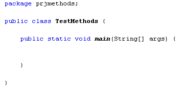
To add a new class to your project, click File from the NetBeans menu. From the File menu, select New File. You'll see a dialogue box appear. In the Categories section select Java, and in the File Types section select Java Class. Then click the Next button at the bottom. In step two, type a name for your new class. We've called ours MyMethods. You can leave everything else on the defaults:
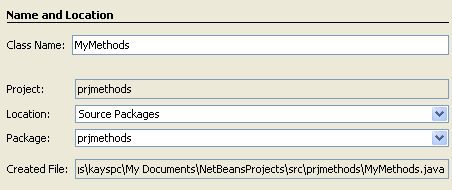
So we're creating a second class called MyMethods which will be in the Project prjmethods. Click the Finish button and your new class file will be created. A new tab will appear in the NetBeans software, with some default comments about how to change templates. You can delete these comments, if you like. You should be left with the following code window:
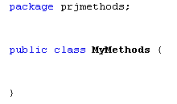
The thing to notice is that there's no Main method this time - just a blank class with the name you chose, and a pair of curly brackets for your code. Let's add one of our methods. So add the following code to your class:
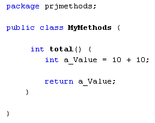
This is the int method we met earlier with the name total. It has nothing between the round brackets, which means we're not going to be handing it any values. All the method does is to add up 10 + 10 and store the answer in a variable called a_Value. This is the value that will be returned from the method. The value after the keyword return must match the return type from the method header. Ours is OK because they are both int.
(It's important to bear in mind that the a_Value variable can't be seen outside of the total method: Any variable set up inside of a method can't be accessed outside of that method. It's known as a local variable - it's local to the method.)
To call the total method, select your TestMethods tab in NetBeans, the one with your Main method. We're going to call the total method from the Main method.
The first thing to do is to create a new object from our MyMethods class. Add the following line to your Main method:
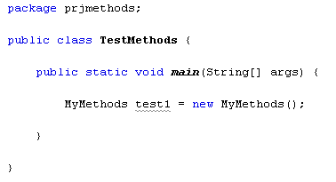
To create a new object from a class you start with the name of the class, MyMethods in our case. This is in place of int, double, String, etc. In other words, the type of variable you're creating is a MyMethods variable. After a space, you type a name for your new MyMethods variable. We've called ours test1. (It's underlined because we haven't done anything with it yet. This is a NetBeans underline.)
An equals sign comes next, followed by the keyword new. This means new object. After the keyword new, type a space followed by your class name again. The class name needs a pair of round brackets after it, this time. End the line in the usual manner, with a semi-colon.
What we've done here is to create a new MyMethods object with the name test1. Our total method inside of the class MyMethods will now be available from the Main method of the TestMethods class.
To call the total method into action, add this line:
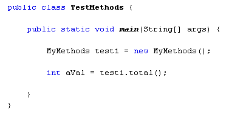
We're setting up an int variable with the name aVal. After an equals sign comes the name of our class, test1. To access methods in the class, type a dot. NetBeans will display a popup box with the available methods:
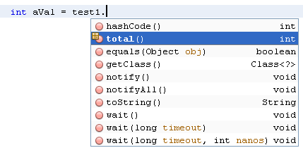
Our total variable is on the list (the others are built in methods). The round brackets are empty because our method doesn't accept values, but the return type, int, is displayed to the right.
Double click total to add it to your code. Then type a semi-colon to end the line.
Finally, add a print line:
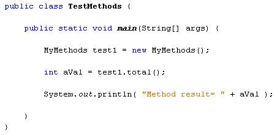
When the code is run, the Output window will display the following:
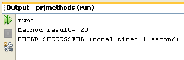
So to call a method that returns a value, note what value is being returned by your method. Then assign this value to a new variable, aVal in our case. But the method should be available when you type a dot after your object name.
If your method is of type void, however, you don't need to assign it to a new variable like aVal. As an example, switch back to your MyMethods class, and add the void method you met earlier:
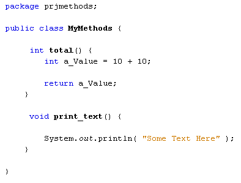
This new method is called print_text. Again, it has an empty pair of round brackets as we're not handing it any values. All it does is to print out some text.
Once you've added the void method, switch back to your TestMethods class. Add the following line:
test1.print_text( )
As soon as you type the dot, you should see the new method appear on the list:
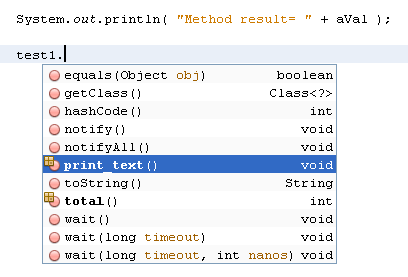
Both of our methods are now on the list, total and print_text. The values that they return are displayed on the right, int and void.
Because the print_text method is a void method, you don't need to set up a return value. All you need is the name of your object, a dot, and the void method you want to call. Java will then just get on with executing the code inside of your method.
Run your code and your Output window should display the following:
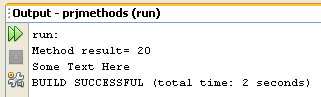
In the next part, we'll take a closer look at passing values to methods.